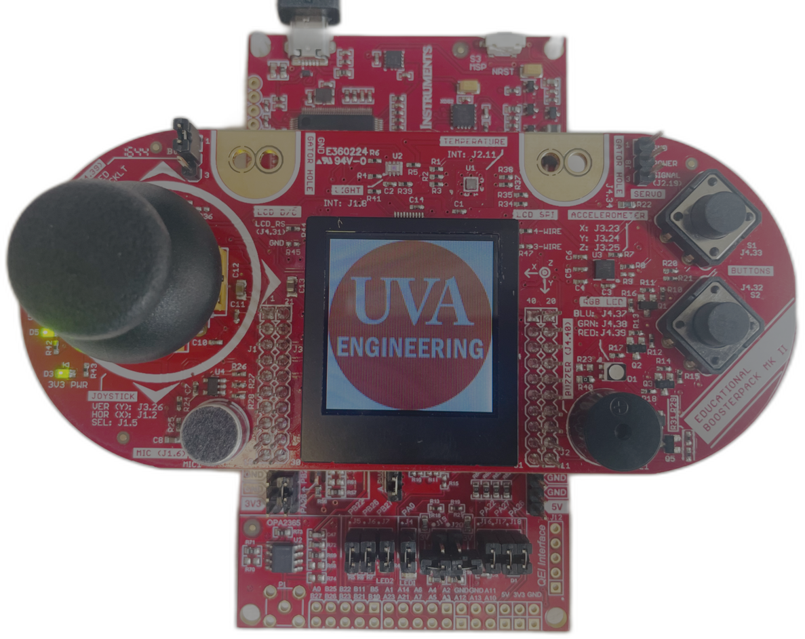

|
ECE 3430 - Fall 2026

Embedded systems are special-purpose computers at the core of Cyber-Physical Systems (CPS)
that monitor and control physical processes through real-time interactions with sensors
and actuators. More than 90% of all manufactured microprocessors are embedded in everyday
devices — from airplanes, automobiles, and medical devices to digital cameras, home
appliances, smart buildings, IoT devices, and robots.
This lab-based course provides the foundational knowledge and hands-on experience needed to
design, evaluate, and implement embedded systems, with an emphasis on the architecture and
interface issues at the boundary between hardware and software.
Enrollment Requirements: Must have completed (ECE 2300 or ECE 2630) AND ECE 2330 and CS 2130, all with C- or better. |